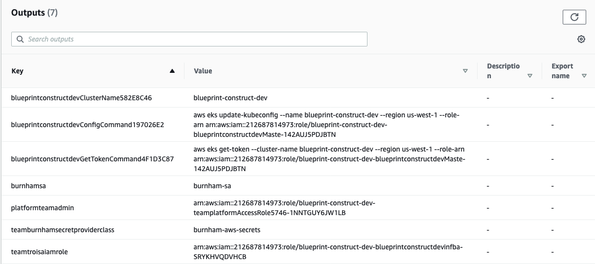

Secrets Store Add-on¶
The Secrets Store Add-on provisions the AWS Secrets Manager and Config Provider(ASCP) for Secret Store CSI Driver on your EKS cluster. With ASCP, you now have a plugin for the industry-standard Kubernetes Secrets Store Container Storage Interface (CSI) Driver used for providing secrets to applications operating on Amazon Elastic Kubernetes Service.
With ASCP, you can securely store and manage your secrets in AWS Secrets Manager or AWS Systems Manager Parameter Store and retrieve them through your application workloads running on Kubernetes. You no longer have to write custom code for your applications.
Usage¶
index.ts¶
import 'source-map-support/register';
import * as cdk from 'aws-cdk-lib';
import * as blueprints from '@aws-quickstart/eks-blueprints';
const app = new cdk.App();
const addOn = new blueprints.addons.SecretsStoreAddOn();
/* Setup application team with secrets
* Here we are generating a new SecretManager secret for AuthPassword
* We are also looking up a pre-existing secret in Parameter Store called GITHUB_TOKEN
*/
export class TeamBurnham extends ApplicationTeam {
constructor(scope: Construct) {
super({
name: "burnham",
users: getUserArns(scope, "team-burnham.users"),
teamSecrets: [
{
secretProvider: new blueprints.GenerateSecretManagerProvider('AuthPassword'),
kubernetesSecret: {
secretName: 'auth-password',
data: [
{
key: 'password'
}
]
}
},
{
secretProvider: new blueprints.LookupSsmSecretByAttrs('GITHUB_TOKEN', 1),
kubernetesSecret: {
secretName: 'github'
}
}
]
});
}
}
const blueprint = blueprints.EksBlueprint.builder()
.version("auto")
.addOns(addOn)
.teams(new TeamBurnham(app))
.build(app, 'my-stack-name');
Functionality¶
- Installs the Kubernetes Secrets Store CSI Driver in the
kube-systemnamespace. - Installs AWS Secrets Manager and Config Provider for Secret Store CSI Driver in the
kube-systemnamespace. - Creates an IAM access policy for scoped down to just the secrets the provided namespace should have access to.
- Updates IAM roles for service accounts
[team-name]-safor policies to grant read access to the provided secrets. - Creates a SecretProviderClass
[team-name]-aws-secretswhich tells the AWS provider which secrets can be mounted in an application pod in the provided namespace.
Security Considerations¶
The AWS Secrets Manger and Config Provider provides compatibility for legacy applications that access secrets as mounted files in the pod. Security conscious applications should use the native AWS APIs to fetch secrets and optionally cache them in memory rather than storing them in the file system.
Renaming Mounted Kubernetes Secrets¶
By default, mounted Kubernetes Secrets inherit the name of their corresponding AWS Secret or SSM Parameter. If the AWS Secret or Parameter name contains slashes ("/" or "\"), they will be replaced by underscores by the CSI Driver.
This can result in undesirable secret names being mounted to your pods, so as a workaround the driver also offers an aliasing feature.
{
secretProvider: new blueprints.LookupSsmSecretByAttrs('/path/to/my/parameter', 1),
kubernetesSecret: {
secretName: 'my_parameter', // not respected when mounting the secret directly to the pod, and will result in sync errors during pod init
secretAlias: 'my_parameter', // respected during mounting. File will be called "my_parameter" instead of "_path_to_my_parameter"
}
}
NOTE: secretAlias is only applicable to secrets that are mounted to a pod. In these scenarios, secretName should match the name of the Secret or Parameter in AWS.
Example¶
After the Blueprint stack is deployed you can test consuming the secret from within a deployment.
This sample deployment shows how to consume the secrets as mounted volumes as well as environment variables.
cat << EOF >> test-secrets.yaml
apiVersion: apps/v1
kind: Deployment
metadata:
name: app-deployment
labels:
app: myapp
namespace: team-burnham
spec:
replicas: 1
selector:
matchLabels:
app: myapp
template:
metadata:
labels:
app: myapp
spec:
serviceAccountName: burnham-sa
volumes:
- name: secrets-store-inline
csi:
driver: secrets-store.csi.k8s.io
readOnly: true
volumeAttributes:
secretProviderClass: burnham-aws-secrets
containers:
- name: test-secrets
image: public.ecr.aws/ubuntu/ubuntu:latest
command: [ "/bin/bash", "-c", "--" ]
args: [ "while true; do sleep 30; done;" ]
resources:
limits:
cpu: "100m"
memory: "128Mi"
requests:
cpu: "100m"
memory: "128Mi"
env:
- name: PASSWORD
valueFrom:
secretKeyRef:
name: auth-password
key: password
- name: GITHUB_TOKEN
valueFrom:
secretKeyRef:
name: github
key: GITHUB_TOKEN
volumeMounts:
- name: secrets-store-inline
mountPath: /mnt/secrets-store
readOnly: true
EOF
The values for serviceAccountName and the secretProviderClass shown in the example above are obtained from CloudFormation outputs of the blueprint stack shown in the screenshot below as burnhamsa and teamburnhamsecretproviderclass.

Apply the manifest.
$ kubectl apply -f test-secrets.yaml
deployment.apps/app-deployment created
Test that kubernetes secret burnham-github-secrets was created.
kubectl get secrets -n team-burnham
NAME TYPE DATA AGE
auth-password Opaque 1 19s
burnham-sa-token-fqjqw kubernetes.io/service-account-token 3 64m
default-token-7fn69 kubernetes.io/service-account-token 3 64m
github Opaque 1 19s
Test that the deployment has completed and the pod is running successfully.
$ kubectl get pods -n team-burnham
NAME READY STATUS RESTARTS AGE
app-deployment-6867fc6bd6-jzdwh 1/1 Running 0 46s
Next, test whether the secret PASSWORD is available as an environment variable from within the app-deployment pod.
$ kubectl exec app-deployment-6867fc6bd6-jzdwh -n team-burnham -- echo $PASSWORD
XXXXXXXXXXXXXXXXXX
Test whether GITHUB_TOKEN is available as an environment variable from within the app-deployment pod.
$ kubectl exec app-deployment-6867fc6bd6-jzdwh -n team-burnham -- echo $GITHUB_TOKEN
ghp_XXXXXXXXXXXXXXXXXXXXXXXXXX